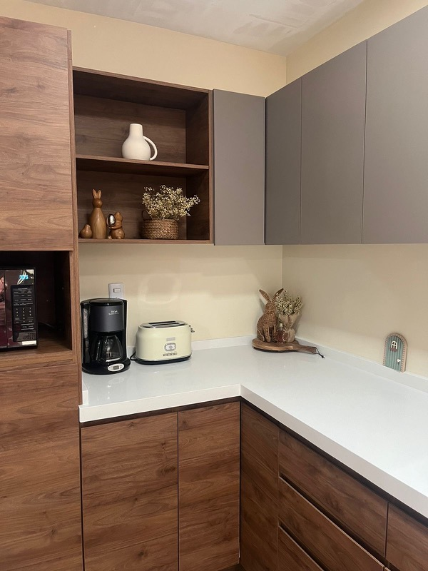
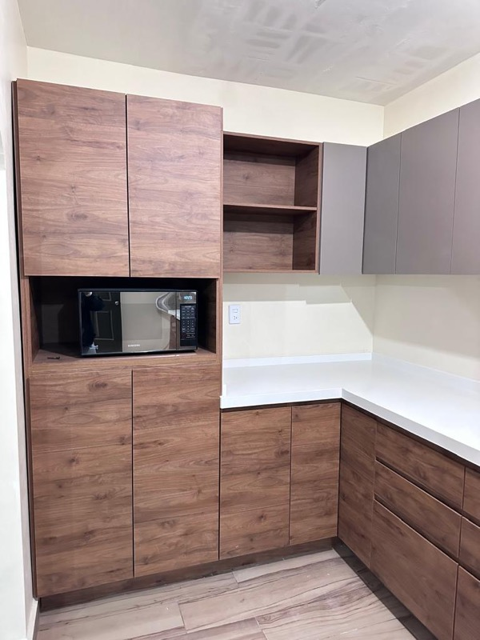
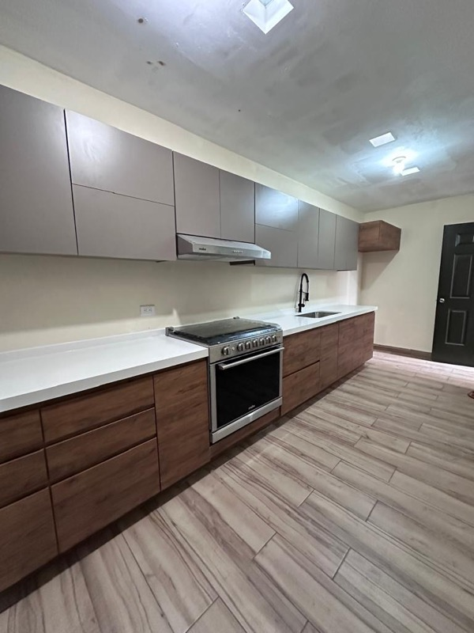
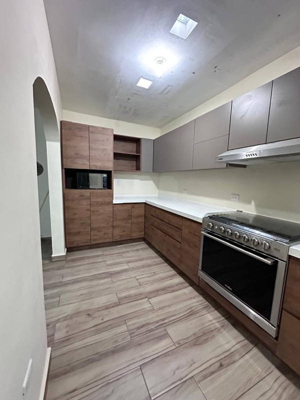
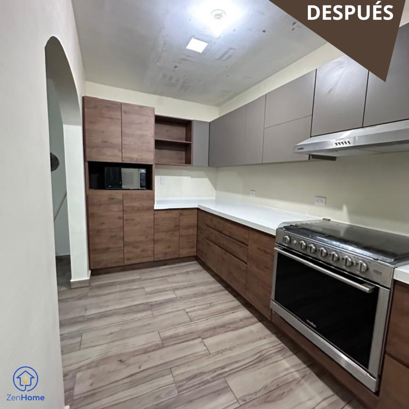
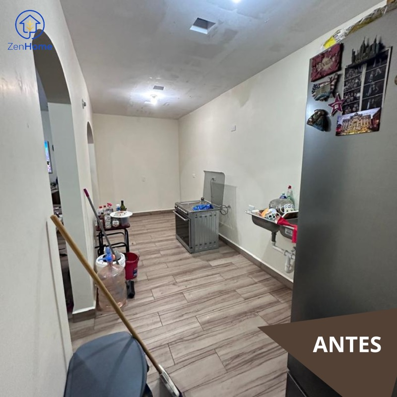

Modernizar una cocina con medidas peculiares en Encino Residencial
El reto fue modernizar un espacio con medidas no convencionales: cocina larga con una pequeña escuadra que aprovechamos al 100%. Trabajamos un balance de colores que amplifica visualmente el espacio y elegimos materiales fáciles de limpiar y resistentes a la humedad para que la cocina siga viéndose como nueva por años.
Materiales:
MDF con melamina
Cubierta de cuarzo
Tarja en acero inoxidable



🔄 El antes y el después
ANTES

DESPUÉS
ANTES

DESPUÉS